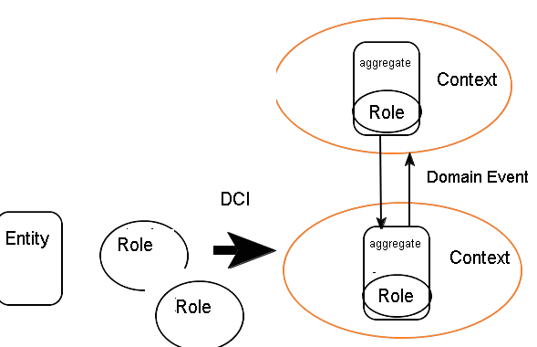
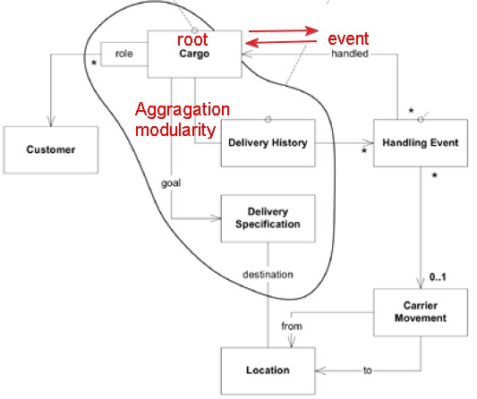
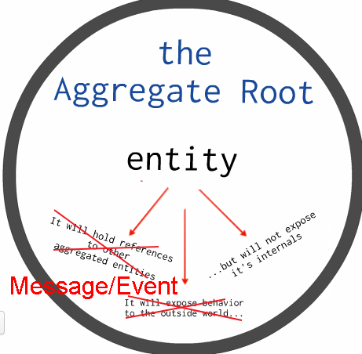
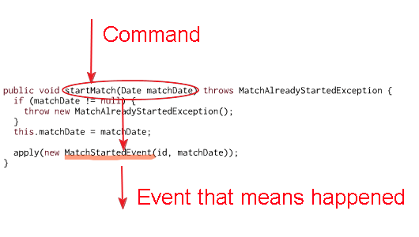
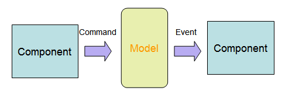

JdonFramework is a java reactive framework that you can use to build your Domain Driven Design + CQRS + EventSource applications with asynchronous concurrency and higher throughput.
JdonFramework = Ioc/DI/AOP + reactive Actors model
domain events in JdonFramework: a
in-memeory model can concurrently publish events to its subscribers.
JdonFramework's event engine is from Disruptor that be recommended by LMAX Architecture wriiten by Martin Fowler. (Nothing Blocks)
Feature of Jdonframework: combining DCI with DDD aggregate and Domain Events.

Domain-driven design (DDD)
Domain-driven design (DDD) is an approach to developing software for complex needs by deeply connecting the implementation to an evolving model of the core business concepts. details.

Eric Evans on How Technology Influences DDD(2012)
DDD's servral concepts are the Heart and Soul of OOP:
Entities and Identity, Value Objects
Aggregate Root
Bounded context
Reactive
Reactive Programming is a hot topic , especially with such things as the Reactive Manifesto.
Reactive architecture allows developers to build systems that are event-driven(EDA), scalable, resilient and responsive: delivering highly responsive user experiences with a real-time feel, backed by a scalable and resilient application stack, ready to be deployed on multicore and cloud computing architectures.
a reactive application is non-blocking that is under heavy load can thus have lower latency and higher throughput than a traditional application based on blocking synchronization and communication primitives.
CQRS
Command-query Responsibility Segregation At its heart is a simple notion that you can use a different model to update information than the model you use to read information. details.
Domain Events
Captures the memory of something interesting which affects the domain. details, see How to create fully encapsulated Domain Models
With JdonFramework you can easily develope a Event Sourcing and CQRS system. in CQRS, by disruptor Jdon can send domain events to #rabbitmqand #zeromq - #distributed.
DCI:Data Context and Interactions: in a Context, a Role played by a Data model triggers interaction behavior.
Object Oriented Programming: A Critical Approach say: OO is really about message passing:
“The message-sending metaphor provides modularity by decoupling the intent of a message (embodied in its name) from the method used by the recipient to carry out the intent. Structural information is similarly protected because all access to the internal state of an object is through this same message interface.”
by using jdon, a aggregate root can act as a mailbox that is a asynchronous and non-blocking event-sending and event-recipient metaphor..see below picture, more details in : Robot sample

Event is a better interactive way for aggregate root with each other, instead of directly exposing behavior and hold references to others. and it can better protect root entity's internal state not expose. and can safely modify root's state in non-blocking way.

Domain Events(Event Sourcing) for Evans DDD :
Real domain logic is in the Domain Model,
Outside the domain are these adapters, that listen to messages sent by
the domain. For instance, the domain could ‘broadcast’ a message(Domain Events) that a
new domain object has been created. An appropriate listener receives this
message and calls a method on a persistence service. This service knows
how to store the object in the database.
Eric evans: Acknowledging CAP at the Root -- in the Domain Model
Key Features:
-
Domain-Driven Dsign Development, supports in-memory cache model.
-
Actor model, like ErLang/scala MailBox, based on LMAX's Disruptor , never blocks ,nothing blocks, concurrent programming; Event-driven Architecture(EDA); asynchronous programming,concurrency pattern, lazy evaluation.
- DI and AOP framework, POJO autowiring that implements Dependency Injection, and all components can be replaced, even include the framework itself. introduce any pojo as a inteceptor.
- Command Query Responsibility Segregation(CQRS/CQS) , support the default implementations for CRUD and auto paginator for query of large datas .
- Lazy loading or evaluation, a aggregate root loads its childern objects until them need to use, improving performance by in-memory cache. memory-consumption-wise
- Be easily integration with Spring framework.
getting Started
In Jdon there are two kinds of model: Component and Model. a Component class is annotated with @Component, and a Model class is annotated with @Model.
When a Model is referenced by Component, it is a aggregate root, if it is referencedby another model, it is not a aggregate root, maybe normal Entity or Value Object.
Model instances live in in-memory cache, and Component instances live in the container that its lifcycle is equal to application scope.
Component can be use to implement DDD's service or other application manager, such as repository or Email sender..
Service (annotated with @Service) is same as Component, their difference is their usage, Service class services for the client, be equals to SOA service.
Jdon provide four kinds of asynchronous concurrency communication(Producer/Consumer) with these two models.
1. Component -----> model
2. model ------->Component
3. Compponent ------> Component
4. model------> model
when a Component/Service sends messages to a Domain Model(aggregate root), in CQRS we call the message is a command, and whe a domain model send message to a Component, we call it reactive a event. see below:

a command actions the behavior(startMatch) of a aggregate root(domain model), and a event happend in this behavior, the event will be sent to another aggregate root or a Component that maybe save it to repository.

1. Component and Model
Component(producer with @Component) -- > Model(consumer with @Model)
this mode is for CQRS's Command, one command is sent from UI, and sent to one aggregate root, one command has one action on the method of the aggregate root. this mode works.
in this mode producer:consumer can only be 1:1, one command can only be sent to one method of one domain model.
The A in this sample is a producer with @Component:
package com.jdon.sample.test.command;
import com.jdon.annotation.model.Send;
public interface AICommand {
@Send("CommandmaTest")
public TestCommand ma(@Receiver BModel bModel);
}
@Component("producer")
@Introduce("componentmessage")
public class A implements AICommand {
public TestCommand ma(BModel bModel) {
System.out.print("send to BModel =" + bModel.getId());
return new TestCommand(99);
}
}
|
the method "ma" annotated with @Send must have a method parameter:BModel that annotated with @Model, that means send a command message to this domain model , the model is a receiver for a command, so must annotate with @Receiver.
@Model
public class BModel {
private String id;
private int state = 100;
public BModel(String id) {
super();
this.id = id;
}
@OnCommand("CommandmaTest")
public void save(TestCommand testCommand) {
this.state = testCommand.getInput() + state;
testCommand.setOutput(state);
}
public String getId() {
return id;
}
public void setId(String id) {
this.id = id;
}
}
|
the topic name "CommandmaTest" is unique; because producer : consumer is 1:1. one command has one action(onCommand). @OnCommand is annotated on the method of consumer.
the procuder(AICommand) 's ma method commands the consumer(BModel)'s save method. AICommand is a Component and BModel is a Model.
below is the client code:
AppUtil appUtil = new AppUtil();
AICommand a = (AICommand) appUtil.getComponentInstance("producerforCommand");
BModel bModel = new BModel("one");
TestCommand testCommand = a.ma(bModel);
int i = 0;
long start = System.currentTimeMillis();
while (testCommand.getOutput() != 199) {
i++;
}
long stop = System.currentTimeMillis();
Assert.assertEquals(testCommand.getOutput(), 199);
System.out.print("ok " + " " + (stop - start)); |
it output:
send to BModel =oneok 5
above source in :https://github.com/banq/jdonframework/tree/master/src/test/java/com/jdon/sample/test/command
in this mode the component receives any commands from UI or others events, and handles them to a aggregate root :
UI ------->commandHandler(@Component) ------>aggregate root model
in this mode, the state of aggregate root is changed by only single thread, it is threadsafe. and no blocking and no lock, like Actors mode of AKKA or ERlang, or like Node.js EDA. instead of 2PC or JTA, this mode can make transaction work well in high throughput way.
2.Model and Component
Model(producer with @Model) -- > Component(consumer with @Component)
After a agrregate root (domain model) receive a command , and it will reactive a event that can be sent to a Component or another aggregate root. we call it is domain events.
we can inject a Component(with @Component) into a agrregate root that acts as a producer.
the domain model code:
@Model
public class MyModel {
private Long id;
private String name;
@Inject //inject the Component into this domain model
private MyModelDomainEvent myModelDomainEvent;
public String getName() {
if (this.name == null) {
DomainMessage message = myModelDomainEvent.asyncFindName(this);
this.name = (String) message.getBlockEventResult();
}
return name;
}
....
} |
we inject MyModelDomainEvent into "MyModel" with @Inject, the injected object "MyModelDomainEvent" is a Component:
package com.jdon.sample.test.domain.simplecase;
import com.jdon.annotation.Introduce;
import com.jdon.annotation.model.Send;
import com.jdon.domain.message.DomainMessage;
@Introduce("message")
public class MyModelDomainEvent {
@Send("MyModel.findName")
public DomainMessage asyncFindName(MyModel myModel) {
return new DomainMessage(myModel);
}
@Send("saveMyModel")
public DomainMessage save(MyModel myModel) {
return new DomainMessage(myModel);
}
}
|
MyModelDomainEvent is annotated with @Introduce("message"), in this producer class there are two topic that means two kinds of domain events.
let's see how to implement a consumer for a domain event. the consumer is too a Component, see below:
@Consumer("MyModel.findName")
public class FindNameListener implements DomainEventHandler {
public void onEvent(EventDisruptor event, boolean endOfBatch) throws Exception {
MyModel myModel = (MyModel) event.getDomainMessage().getEventSource();
System.out.println("Asynchronous eventMessage=" + myModel.getId());
event.getDomainMessage().setEventResult("Asynchronous eventMessage=" + myModel.getId());
}
}
|
FindNameListener is annotated with @Consumer, not @Component, this is another consumer style, when using @Consumer, we need implement a interface DomainEventHandler, and implement its method onEvent, if we using @Component, we need use @OnEvent together.
above consumer is for the producer @Send("MyModel.findName"), another consumer for this producer @Send("saveMyModel") of this sample uses @Component and @OnEvent:
@Component("mymrepository")
@Introduce("modelCache")
public class RepositoryImp implements MyModelRepository {
@Around
public MyModel getModel(Long key) {
MyModel mym = new MyModel();
mym.setId(key);
return mym;
}
@OnEvent("saveMyModel")
public void save(MyModel myModel) {
System.out.print("\n No.1 @OnEvent:" + this.getClass().getName());
}
} |
this consumer is a class RepositoryImp that it is a Repository of DDD, and it also fetch a aggregate root from repository, @Introduce("modelCache") and @Around enable in-memory cache before the database. only when there is no the model object in cache, it will got from the database. @Introduce("modelCache") and @Around is necessary for using jdon framework. if not use them, any domain events will disable.
another way,we can call com.jdon.domain.dci.RoleAssigner assignAggregateRoot method to let any normal object be act as a aggregate root.
we have known about two modes between Component and aggregate root, if using these two modes in a aggregate root, it can be regarded as a Actors mode like Akka or Erlang:
- Share NOTHING,
- Isolated lightweight event-based processes,
- Each actor has a mailbox (message queue, in jdon it is Disruptor of LMAX)
- Communicates through asynchronous& non-blocking message passing
above sources: https://github.com/banq/jdonframework/tree/master/src/test/java/com/jdon/sample/test/domain/simplecase
3.Component and Component
Component(producer with @Component) -- > Component(consumer with @Component)
in this mode there are two ways:
1. dependency inject
2. producer and consumer based on Event.
Dependency inject is like IOC, Jdon only supports class construtor inject:
@Component
public class A{
private B b;
//inject b instance
public A(B b){
this.b = b;
}
}
@Component
public class B{
}
|
after B was injected into A, A can directly invoke any B's method. another way is more loose couple,between A and B there are communicates through asynchronous& non-blocking message passing .
The A in this sample is a producer with @Component:
package com.jdon.sample.test.event;
import com.jdon.annotation.model.Send;
public interface AI {
@Send("maTest")
public TestEvent ma();
}
@Component("producer")
@Introduce("componentmessage")
public class A implements AI {
public TestEvent ma() {
System.out.print("event.send.ma..");
return new TestEvent(99);
}
}
|
The B in this sample is a consumer with @Component, and its consumer method must be annotated with @OnEvent,
@Component("consumer")
public class B {
@OnEvent("maTest")
public void mb(TestEvent testEvent) throws Exception {
testEvent.setResult(testEvent.getS() + 1);//the consumer return a result to the procuder
System.out.print("event.@OnEvent.mb.." + testEvent.getResult() + "\n");
Assert.assertEquals(testEvent.getResult(), 100);
}
}
|
the value "maTest" of @OnEvent must be same as the value of @Send. and the return type "TestEvent" of the method with @Send must be same as the input paramter type of the @OnEvent, so the producer can handle a object to the consumer.
if the consumer want to return a result to the producer, recommend to use method setEventResult of com.jdon.domain.message.DomainMessage, and the producer can fetch the result by its getBlockEventResult() or getEventResult(), getBlockEventResult() can block until get the result.
Test client code:
AppUtil appUtil = new AppUtil();
AI a = (AI) appUtil.getService("producer");
TestEvent te = a.ma();
long start = System.currentTimeMillis();
while (te.getResult() != 100) {
}
long stop = System.currentTimeMillis();
Assert.assertEquals(te.getResult(), 100);
System.out.print("ok " + " " + (stop - start) + "\n");
|
output:
[junit] event.send.ma..event.@OnEvent.mb..100
[junit] ok 31
above codes is fromhttps://github.com/banq/jdonframework/tree/master/src/test/java/com/jdon/sample/test/event
4.Model and Model
Model(aggregate root A) -- > Model(aggregate root B)
Aggregates
are
always
internally
consistent, and Aggregates"eventually
consistent" with
each
other.
– Asynchronous
updates
propagate
through
system,References are
limited
to
aggregate
roots.
when a aggregates root want to cal another aggregates root , it only can be implemented by domain events, a output event act as a input command for another aggregates root.
this mode consists of three modes above:
1. Aggrgate root A reactive a event to a Component (model ---> Component)
2.the Component transfer the event to a command for Aggrgate root B (Component ---->Component)
3.the command will be sent to Aggrgate root B (component -->model)
this mode's source code is in Github: https://github.com/banq/jdonframework/tree/master/src/test/java/com/jdon/sample/test/cqrs
Blog
DDD CQRS EventSourcing example source: football Match
CES:Context Event and State
DDD DCI and DomainEvents example
how to enhance Jdon framework to DCI framework ?
Immutability is Easy
how to easily develop a non-blocking concurrent application ?
History

 163.com or twiiter:
163.com or twiiter: